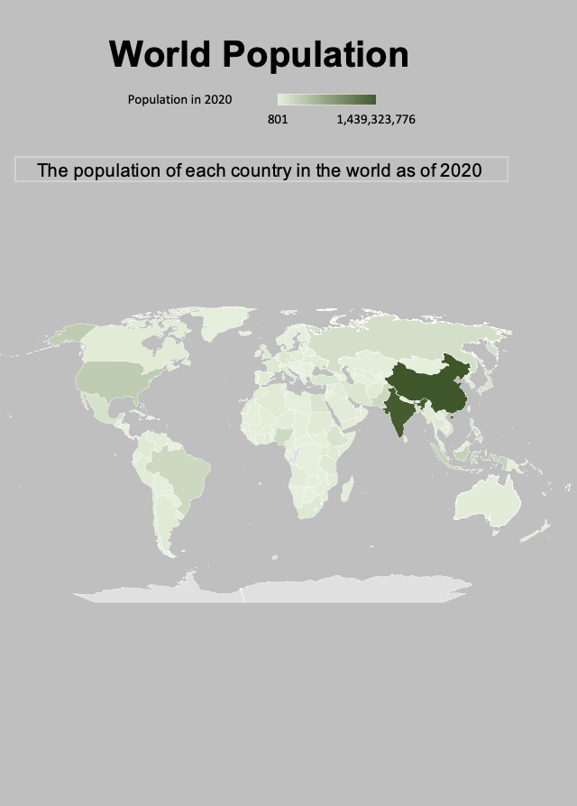

The 5 electoral votes for Nebraska and the 4 electoral votes for Maine
Point:
The number of electoral votes needed to win the election
Channels
Color - Hue:
This is a great channel to distinguish the states. The color red represents the Republican party while blue represents the Democratic party.
This is a good mapping because these two colors both pop out and you can easily tell the difference between the two. Also, the color association of red and blue is widely known across the country so it is easy to correlate the color with the party without a map. This is used in the map, the electoral vote line, and the electoral votes for Nebraska and Maine.
Shape:
The different shapes in this map respresent the states of the United States.
This is good mapping because the map of the United States is known to Americans all over the country. People are easily able to see which states voted for which political party.
Position (Horizontal):
The horizontal line at the top of this chart represents the number of electoral votes each candidate has gotten.
This is good mapping because it shows the halfway point (the point listed above) and you easily tell who is winning in the election very quickly.
Color Map
Categorical:
The two colors (red and blue) are quite distinct. Red is used to represent the Republican party and blue is used to represent the Democratic party.
This is good mapping because it is easy for viewers to see which parts on the chart correlate to which political party.
Marks
Point:
Points on the graph representing the exit velocity and launch angles of batted balls
Lines:
Denote the type of hit that the batter executed. There are lines denoting fly balls, line drives, pop-ups and ground-balls
Area:
The bar on the top-left indicating the below average, average, and above average LWTS or scoring value.
Channels
Position (Horizontal and Vertical):
The positioning of each point on the graph gives the viewer an idea of the velocity and launch angles of each batted ball.
This channel represents the velocity and launch angles and it is a great choice to display how to visualise the information as it gives the user a good idea of which balls had a low velocity and a low launch angle, and vice versa.
Color - Hue:
The scoring value of each batted ball is depicted by color on this visualization. Those that are below average have a purple-ish collar, those at the average have a white color, and those above the average have an orange color.
I think this is a good representation of the scoring value attribute, as the user is clearly able to visualise what angles and velocities generate the most points, which ones generate average points, and which ones generate below average points.
Color - Luminance:
To represent how far away from the average each point is, the author of this visual decided to incorporate a luminance element. The further away from the average the point was, the darker the point got.
I think this is a good mapping because the viewer can easily understand that darker values mean more, so the more intense the color was the further away it was from the average.
Color Map
Divergent:
The purple, white, and orange color maps represent the scoring value of each batted ball.
The divergent color map used by this visualization is a good choice as it uses two colors (purple and orange) to indicate the extremes of a range, and neutral white color in the middle.

Marks
Area:
Map of the world that represents the different countries
The bar for the population in 2020 gradient
Channels
Position (Horizontal):
The horizontal position of the line allows the user to see the differences between a highly populated and a lower populated country
This is a good mapping choice because the viewer can quickly tell the the difference between the left and right side of the bar and what it represents.
Color - Luminance:
To represent the population of each country, color luminance was used. The darker the country is colored, the higher the population. The lighter the country is colored, the lower the population.
I think this is good mapping because the viewer can easily understand that darker values mean more, so the more intense the color, the higher the population. Grey values also mean no data was available which is pretty easy for the user to understand.
Shape:
This was used to represent the different countries on the map.
I think this is good mapping because the viewer has knowledge of the world map so they can easily tell the difference between the countries.
Color Map
Sequential:
The light green to dark green scale represents the population number (lower to higher).
The sequential color map used by this visualization is a good choice as it uses one color (green) to indicate the extremes of the population. A user can easily tell the countries with the lighter color indicates a lower population while the darker ones mean a higher population.